EQUIPES E PILOTOS
 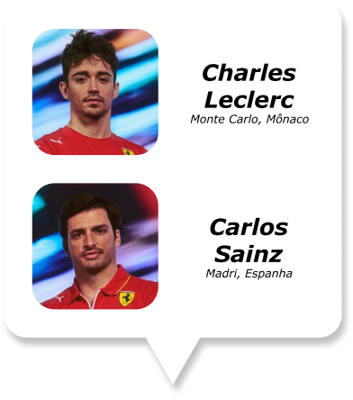
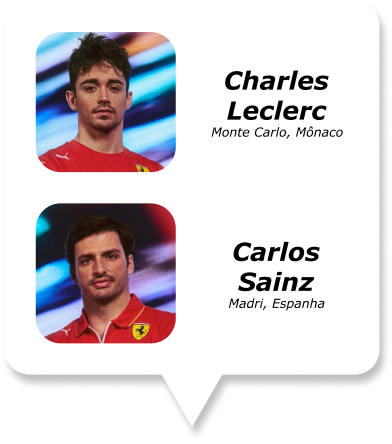
 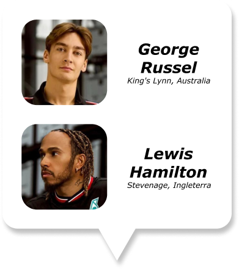
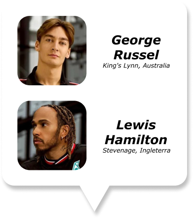
 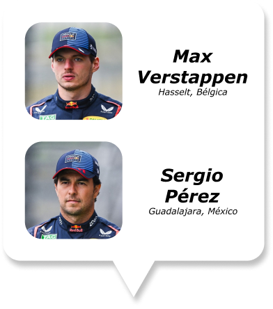
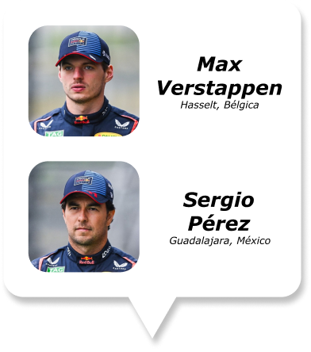
 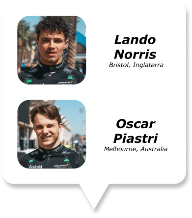
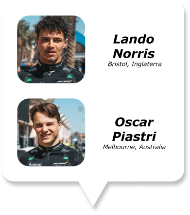
 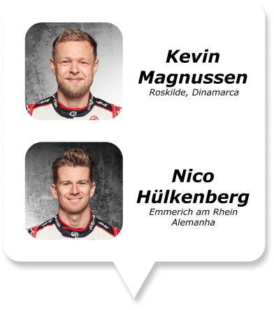
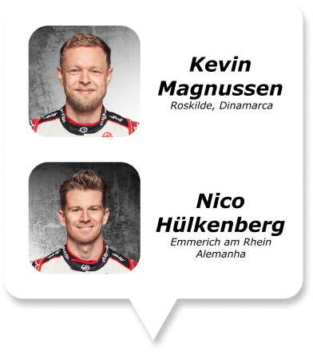
 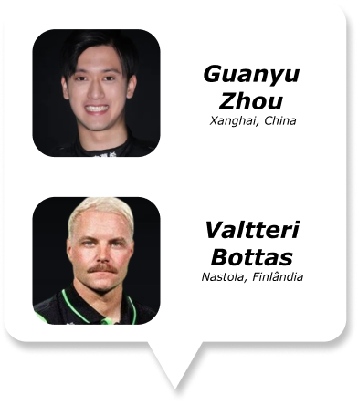
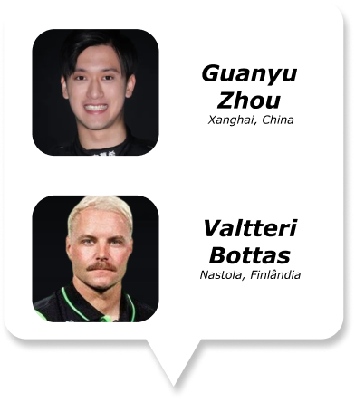
 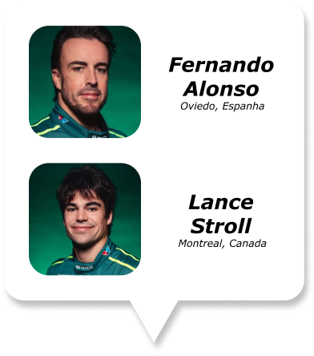
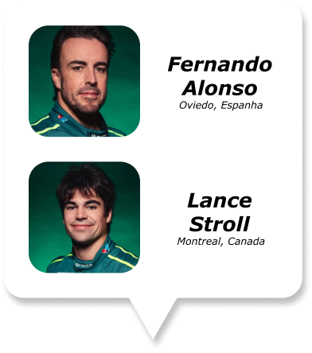
 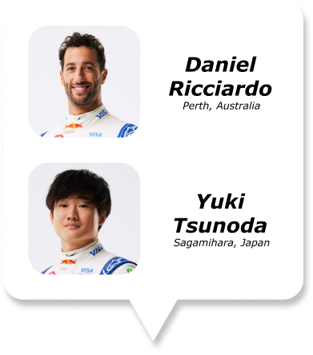
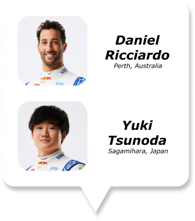
 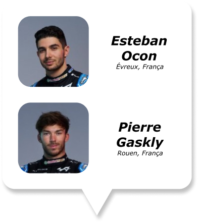
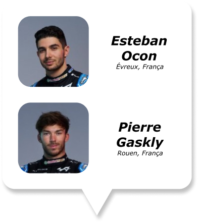
 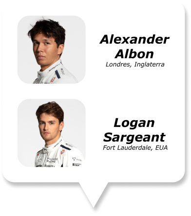
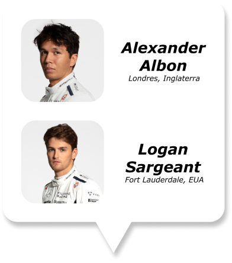
REGRAS E ESTRUTURA
Pistas
A temporada da Fórmula 1 acontece em diversas pistas ao redor do mundo, entre elas estão:


Dias de Corrida
Formatos de classificação da Fórmula 1:
Sem sprint
Sexta-feira: Treino Livre 1 (90 minutos) & Treino Livre 2 (90 minutos)
Sábado: Treino Livre 3 (60 minutos) & Classificação (Q1, Q2 e Q3)
Domingo: Corrida
Com sprint
Sexta-feira: Treino Livre 1 (60 minutos) & Classificação (Q1, Q2 e Q3)
Sábado: Treino Livre 2 (60 minutos) & Sprint (100km, cerca de 30 minutos)
Domingo: Corrida
Treino Livre:
Os Treinos Livres (TL ou Free Practice) servem para que os pilotos reconheçam a pista, as condições do asfalto e levantem dados importantes para a equipes. Eles não são obrigados a participar de todos os TL, mas precisam marcar presença em pelo menos um para participar do GP.
Classificação da Corrida:
A classificação é dividida em três segmentos: Q1, Q2 e Q3. Todos os pilotos podem ir à pista ao mesmo tempo, então cabe às equipes definir o melhor momento para liberar seus carros, visando evitar tráfego e garantir um bom tempo de volta rápida. O Q1 começa com 18 minutos no relógio e todos os 20 pilotos. Ao fim do cronômetro, os cinco pilotos com os piores tempos são eliminados e, de acordo com a colocação na tabela, garantem do 16º ao 20º lugar no grid. O Q2 segue o mesmo padrão, com cinco eliminados definindo do 11º ao 15º lugar após 15 minutos de ação na pista. No Q3, dez pilotos brigam pela pole position, atribuída ao piloto que fez a volta mais rápida; os restantes completam o grid da segunda à décima colocação
Corrida:
No dia da corrida, a posição de largada é determinada pela classificação realizada no dia anterior. Com os pilotos já posicionados em seus lugares na pista, o início da corrida é sinalizado pelas luzes do semáforo: primeiro todas as luzes se acendem, e assim que se apagam, os pilotos partem para a disputa. A corrida normalmente termina quando são completados 305 km ou após 2 horas de prova, o que ocorrer primeiro. Durante a corrida, é obrigatório que todos os pilotos façam pelo menos um pit stop para a troca de pneus, garantindo a segurança e o desempenho dos veículos. A pontuação final é determinada pela ordem de chegada dos pilotos, sendo que o pódio é composto pelos três primeiros colocados. Esses pilotos recebem maior destaque e somam mais pontos para o campeonato.
Classificação da Corrida Sprint:
A definição do grid para a corrida sprint segue muito do padrão da classificação para o GP tradicional, mas há algumas diferenças. A primeira delas é o tempo de cada segmento: no total, a sessão completa leva 44 minutos, contra 60 minutos do treino classificatório comum. O SQ1 tem 12 minutos de duração e o SQ2, dez minutos; nos dois primeiros segmentos da classificação para a sprint, é obrigatório o uso de pneus médios novos. No SQ3, quando os dez pilotos restantes brigam pela pole position, há oito minutos à disposição e uso obrigatório de pneus macios.
Corrida Sprint:
Instauradas em 2021, as corridas sprint ocorrem apenas em algumas etapas do calendário. Nas duas primeiras temporadas do modelo, três GPs tiveram a corrida curta. Em 2023, a F1 dobrou esse número para seis. Inicialmente, as corridas curtas costumavam também definir o grid da corrida de domingo, mas agora somam apenas pontos extras para o Mundial. No primeiro ano do modelo, somente os três pilotos do pódio pontuavam. Desde 2022, entretanto, a F1 estendeu a zona de pontuação até o oitavo colocado.
Regras
Regras Técnicas:
> O carro deve pesar aproximadamente 798kg, incluindo o piloto e sem combustível;
> Os carros não podem exceder 2 metros de largura e a altura máxima é de 95 cm;
> Cada carro deve ser equipado com um motor híbrido V6 turbo de 1,6 litros.
> Os carros têm um limite máximo de 110 kg de combustível que pode ser utilizado
durante uma corrida.
Regras de Conduta:
Segurança: > Os pilotos devem seguir rigorosamente as regras de segurança, como
o uso do halo, cintos de segurança, e trajes específicos. Há também
procedimentos rigorosos a serem seguidos em casos de acidentes ou situações
perigosas na pista.
Defesa de Posição: > Um piloto pode mudar sua trajetória uma vez para defender
sua posição. Movimentos adicionais na zona de frenagem são proibidos.
Penalidades: > Infrações como ultrapassagem sob bandeira amarela, exceder o
limite de velocidade nos pits, ou causar colisões, podem resultar em penalidades
que variam desde a adição de tempo à corrida até a desclassificação.
Elementos da Corrida
Pneus
Pista seca:
> Macios (vermelho): são os que se desgastam mais rápido; porém, por serem menos
rígidos, potencializam a velocidade do piloto;
> Médios (amarelo): também são mais rápidos, mas sua durabilidade é de nível
intermediário e pode se estender por até 40 voltas ou além;
> Duros (branco): permitem longos stints (períodos com um pneu até o próximo pit stop) e
asseguram os pilotos quanto ao risco de um furo ou da queda de rendimento.
Pista molhada:
> Intermediários (verde): possuem ranhuras mais superficiais e servem para chuva fraca
a moderada ou uma situação de pista úmida sem chuva.
> Chuva forte (azul): são adotados em caso de precipitação extrema. Oferecem maior
proteção contra aquaplanagem.
Bandeiras

HISTÓRIA
A Fórmula 1 foi criada como um campeonato mundial de carros de corrida, com a primeira temporada inaugurada em 1950 na Grã-Bretanha. As primeiras corridas contaram com a presença de equipes icônicas como Alfa Romeo, Ferrari e Maserati, estabelecendo rivalidades que perduram até hoje. Este período é marcado pela predominância de equipes como Alfa Romeo e Ferrari. Pilotos como Juan Manuel Fangio se destacaram, conquistando cinco campeonatos durante a década. Nos anos 1960 a Fórmula 1 se popularizou, tendo pilotos como Jim Clark e Graham Hill se destacando. A segurança nas pistas começou a ser uma preocupação crescente após diversos acidentes trágicos. O uso de motores mais potentes e a introdução de equipamentos aerodinâmicos transformaram os carros. Em 1970 viu-se o surgimento de nomes como Emerson Fittipaldi e Jackie Stewart, e também enfrentou tragédias, como a morte de pilotos em acidentes. Nos anos 1980, a McLaren e a Williams dominaram a categoria, e os motores turbo se tornaram populares, culminando em corridas mais rápidas e emocionantes. Com o aumento das tragédias houve aumento na segurança, o que levou a alterações nas regras, visando proteger os pilotos. Nos anos 1990, surgem pilotos lendários, como Ayrton Senna, Alain Prost e Nelson Piquet. As rivalidades entre Senna e Prost são especialmente memoráveis. Começa o uso de tecnologias como a telemetria e os sistemas eletrônicos começava a ser introduzido, alterando a dinâmica das corridas. Com a trágica morte do Ayrton Senna em 1994, levou a uma intensificação das normas de segurança. Nos anos 2000, a Ferrari teve um período de domínio sob a liderança de Michael Schumacher O avanço tecnológico trouxe sistemas como controle de tração e aerodinâmica avançada. Novas corridas foram adicionadas em mercados emergentes, como a China e o Oriente Médio, ampliando a base de fãs globalmente. Nos anos 2020 A competição continua a ser intensa, com a introdução de novos formatos de classificação e um aumento no foco em sustentabilidade e tecnologia verde. O campeonato segue evoluindo, com mais ênfase na justiça competitiva e no envolvimento dos fãs, incluindo inovações como corridas sprint e um calendário expandido de eventos ao redor do mundo. O documentário "Drive to Survive" da Netflix aumentou exponencialmente a popularidade da F1, atraindo novos fãs e revitalizando o interesse pelo esporte. A federação que controla a Fórmula 1 e outras corridas é a FIA (Federação Internacional de Automobilismo): A entidade máxima que regulamenta as competições de automobilismo.